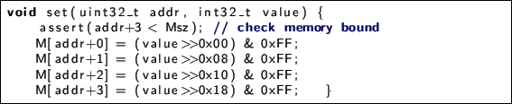
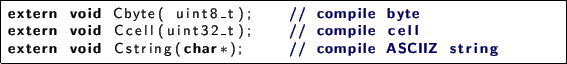

Next: Memory Up: Something different: FORTH Previous: FORTH/ file structure Contents
FVM11.2 has one byte-addressed memory, and two separate stacks:
Sizes of this structures was defined by constants, but you can modify code and
use expandable storage type like vector11.3

FORTH has special CELL constant, corresponds to machine word size
in bytes.

vector 11.3